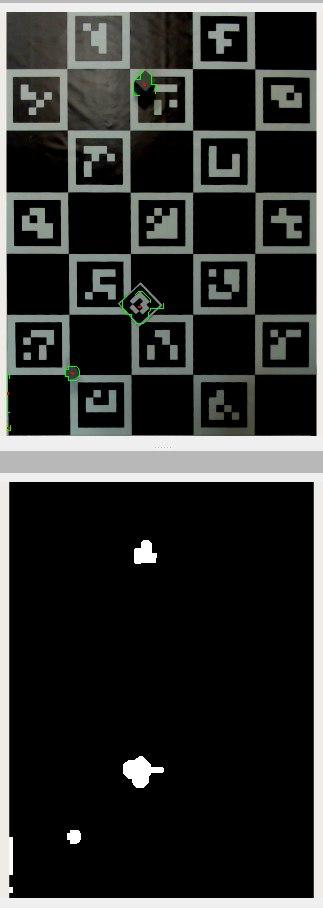
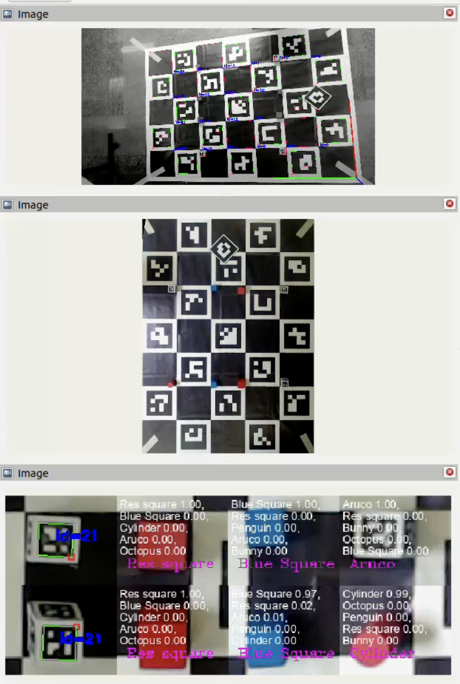
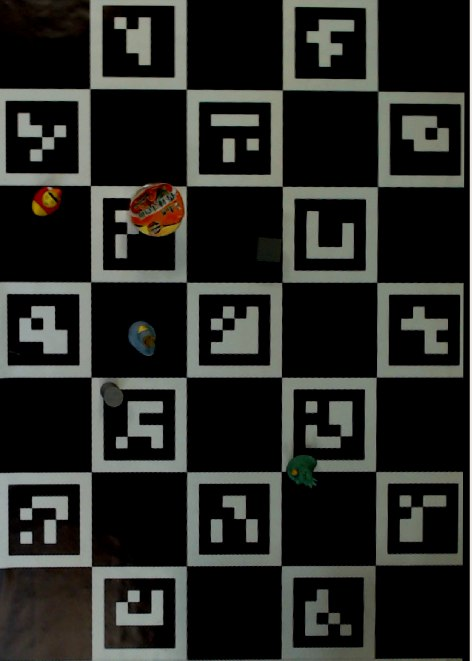
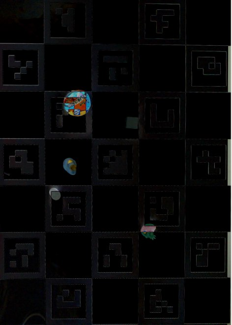

Сервер GPS и классификация объектов
Видео с демонстрацией работы GPS и классификации объектов
Общая схема
┌──────────── Изображение с камеры
│ │ │
│ ▼ ▼
│ ┌───────────────────┐ ┌───────────────────┐
│ │Определение позиции│ │Определение позиции│
│ │ charuco-доски │ │ aruco-маркера │
│ └────┬───────┬──────┘ └────┬──────────────┘
│ │ │ │
│ │ ▼ ▼
│ │ ┌──────────────────┐
│ │ │Вычисление позиции│
│ │ │ маркера на доске │
│ │ └──────────────────┘
│ │ │
│ │ ▼
│ │ Отправка на робота
▼ ▼
┌───────────────────┐
│"Выпрямление" доски│
│ по известной поз. │
└───────────────────┘
│
▼
┌───────────────────┐
│ Определение 16 │
│ стартовых позиций │
└───────────────────┘
│
▼
┌───────────────────┐
│Определение объекта│
│ в каждой из │
│ стартовых позиций │
└───────────────────┘
│
▼
Отправка на робота
Запуск
Для удобного запуска реализован launch-файл all.launch.py, который запускает:
- usb_cam_node_exe для получения изображения с камеры
- charuco_detector для распознавания и получения координат доски
- apriltag_pose_detector_node для распознавания и получения координат маркера
- pose_recalibrator для получения координат маркера в относительных координатах доски
- charuco_rectifier_node для "выпрямления" доски по известной позиции и распознавания объектов
В этом же файле находятся все основные настройки, например параметры aruco-маркера, названия топиков и т.д.
usb_cam_node_exe
Используется стандартный usb_cam для получения изображения с камеры, отправляется в топик /image_raw. Также, для корректной работы нод, камера была откалибрована и данные о камере передаются в топик /camera_info.
В папке charuco_ws/src/usb_cam находятся файлы с настройками камеры. Там важно изменить все параметры камеры под свою, также полезно настраивать яркость (brightness) до сборки датасета и использования распознавания объектов.
charuco_detector
Нода определяет арукомаркеры на изображении и по их позициям, зная искажение камеры и расположение маркеров на доске, определяет позицию доски относительно камеры. Публикует tf2 топик /image_raw_charuco_pose с координатами доски относительно координат камеры.
За основу взят репозиторий charuco_detector_ROS2, портировавший на ROS2 репозиоторий charuco_detector.
apriltag_pose_detector_node
Нода определяет все маркера на изображении, используется для получения координат робота (с маркером 239 семейства Aruco 250_4х4) и распознавания центрального маркера для определения старта игры.
Получение координат маркера в системе камеры аналогично получению координат charuco-доски, код представляет стандартный пример обнаружения маркеров библиотеки OpenCV2, обернутый в ROS2.
pose_recalibrator
Нода получает tf2-топики /image_raw_charuco_pose и /image_raw_apriltag_pose и вычисляет координаты маркера в координатах доски (включая координаты центра маркера и его направление, то есть направление взгляда робота). Преобразование делается стандартным ROS2-методом для tf2.
Полученные координаты отправляются на робота через топик /image_recalib_apriltag_pose.
charuco_rectifier_node
Нода получает изображение с камеры, откалиброванные параметры камеры (типа искажения, разрешения и т.д.) и позицию доски относительно камеры. Используя эти данные, мы можем определить позиции углов доски в пикселях на изображении, и по ним "выпрямить" доску, то есть получить прямоугольное изображение, углы которого соответствуют углам доски и расстояние в пикселях соответствует расстоянию в миллиметрах на реальной доске.

Так как мы точно знаем стартовые позиции объектов, мы получить изображения каждого из объектов, обрезая матрицу изображения с выровненной доской

Это скрин отладочных выводов в RViz. Здесь видно как нарезаются картинки для каждого объекта, которые по одной передаются в модуль распознавания (подробнее тут), который определяет тип и возвращает его нам.
Код определяет все 16 объектов. Если симметричные объекты совпадают (по регламенту расположение объектов симметрично в начале матча), значит вероятность ошибки мала и код отправляет на робота список, сопоставляющий номер позиции на поле с объектом который там стоит. Когда центральный тег открывается (начало игры и запуск роботов) мы больше не распознаем объекты и отправляем последний список который увидели
Apendix
Идеи дальше остались на стадии разработки
Высь код можно найти в файле charuco_rectifier_node.py
Изначально мы планировали определять позиции объектов с камеры над полем, так как думали что их стартовое расположение будет случайным. Для этого мы сначала калибровались, запоминая изображение поля без объектов и роботов на нем (уже "выпрямленное"). Возьмем такое изображение

Теперь работаем с картинками как с матрицами - вычисляем модуль разности для каждого пикселя между калибровочным изображением и картинки с поля. Если попробовать вывести полученную матрицу, получим следующее

Видно, что рисунок самой доски почти уходит (что легко исправляется морфологическими преобразованиями), а объекты легко отличимы глазом на полученном изображении.
Проблема возникает с тем, что такая разность слишком чувствительна к изменениям в освещении, особенно к теням на поле, из-за чего приходится сильно обрабатывать полученную матрицу, но из нее можно получить хорошую маску (хотя бы в тепличных условиях)
Первое большое пятно - нашего робота, легко выкинуть зная его координаты. Второе большое пятно - робот противника, выкинем его и объекты с запасом вокруг. Всё что осталось - какие-то игровые объекты, зная их точную позицию на изображении, можем обрезать кадр и отправить в модуль распознавания, как описано выше
Apendix's appendix
В той же ноде charuco_rectifier_node планировалось составлять маршрут для робота с объездом дешевых объектов и вражеского робота. Но увидев регламент самого хакатона, мы решили просто доставлять в зону выгрузки ближайшие объекты, отдавая приоритет более дорогим.
На взаимодействие с противником мы не рассчитывали, но оставили на всякий случай "усики", которые не дают роботу таранить объекты, но об этом подробнее в части про хардвар